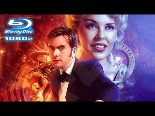
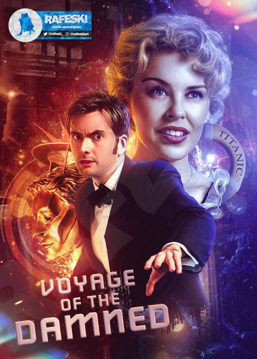
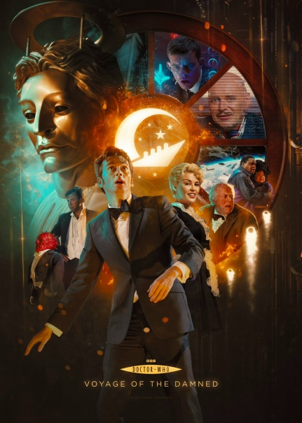

чаще всего это нулевая серия четвертого сезона

Voyage of the Damned
рождественский спецвыпуск
25 декабря 2007
Формат: 60-минутный эпизод
| Варианты озвучек: | * Разные: смотрите по инструкции чаще всего это нулевая серия четвертого сезона |
|---|---|
| Скачивание и просмотр: |
В этой серии появилась Кайли Миноуг в роли Астрид Пет - новой спутницы Доктора. Её гибель стала первым случаем смерти спутника Доктора на телевидении со времён истории «Землетрясение» (1982), где на космическом корабле разбился Адрик.

